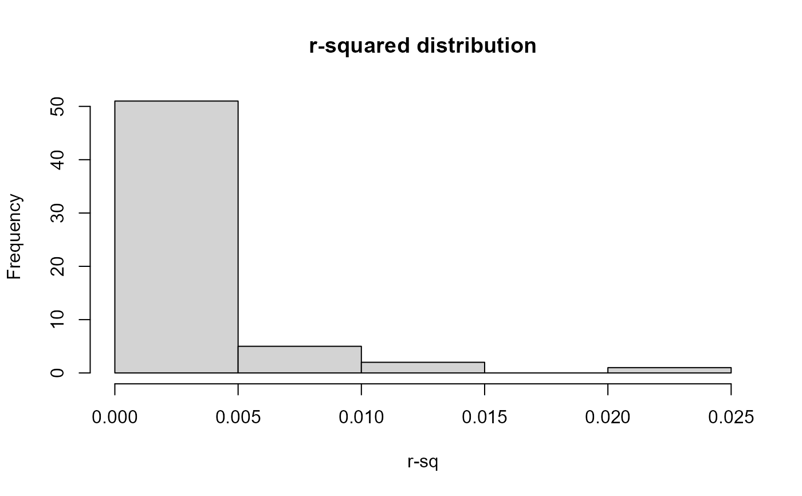

Computes pairwise \(r^2\) and \(D'\) (normalised linkage disequilibrium) between all SNP pairs within a specified distance on the same chromosome. Fixed loci are skipped.
compute_ld(geno_matrix, snp_map, max_snps = 500L, max_dist_bp = 1e+06)Integer dosage matrix \(n_{individuals} \times n_{SNPs}\).
A data.frame with columns snp_id, chrom,
and pos_bp.
Integer. If ncol(geno_matrix) > max_snps, a random
subsample is used. Default 500.
Numeric. Maximum inter-SNP distance in base pairs for
which LD is computed. Default 1e6 (1 Mb).
A data.frame with columns snp_a, snp_b,
chrom, dist_bp, r2, and D_prime.
Returns an empty data frame if no pairs qualify.
sim <- simulate_population(n_founders = 100, n_snps = 300,
n_generations = 2, chromosomes = 1:3, seed = 1)
#> === GenoSim: Population Forward Simulator ===
#> Founders: 100 | SNPs: 300 | Generations: 2
#> F=0.000 | mu=1.00e-04 | s=0.000 | Ne=100
#> [1/4] Simulating founder genotypes...
#> [2/4] Running forward simulation...
#> -> Generation 1/2
#> -> Generation 2/2
#> [3/4] Computing summary statistics...
#>
#> === Simulation Complete ===
#> Total individuals: 475 | SNPs: 300
ld <- compute_ld(sim$genotypes[[1]], sim$snp_map, max_snps = 200)
#> LD: subsampled to 200 SNPs
hist(ld$r2, main = "r-squared distribution", xlab = "r-sq")
